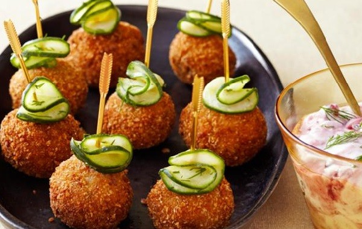
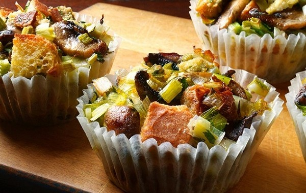
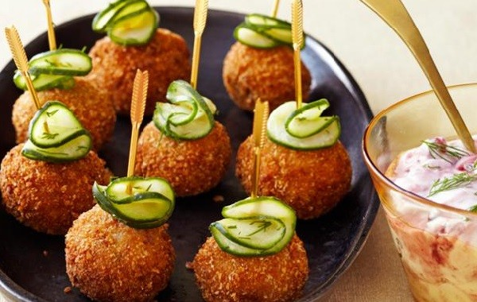
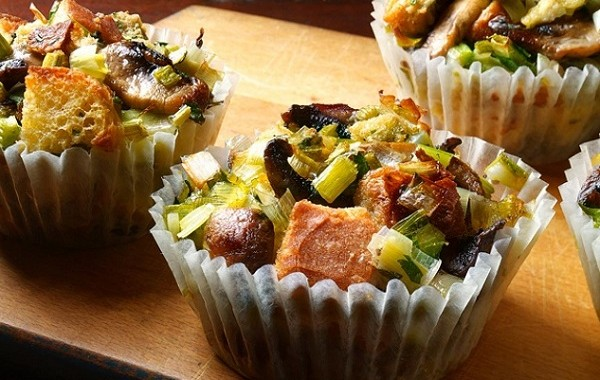

Chef Joe

A home-cooking enthusiast, Chef Joe's kitchen is filled with warmth and simplicity. Born with a love for comfort food, Joe enjoys whipping up easy-to-follow recipes that bring joy to everyday meals.
Recipes


Chef Sarah
An amateur baker with a sweet tooth, Chef Sarah turns her kitchen into a haven for cookies and cakes. Sarah's joy lies in experimenting with dessert recipes, bringing homemade sweetness to family and friends.
.jpg)

Chef Tom
Embracing the slow cooker and one-pot wonders, Chef Tom simplifies meal prep for busy households. Tom's recipes focus on ease and efficiency, proving that delicious meals can be achieved with minimal effort.


Chef Bob
With a love for BBQs and classic grilling, Chef Bob is your neighborly expert in backyard cooking. Bob's weekends are filled with the aroma of charcoal and the sizzle of burgers, making him the king of casual outdoor dining.
Recipes
 




Chef John
Juggling a busy schedule, Chef John embraces quick and delicious dishes.John's cooking style revolves around convenience, making his the go-to chef for those seeking practical and tasty recipes for the everyday table.
Recipes